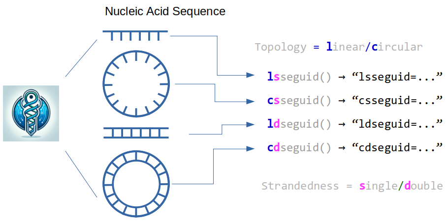

SEGUID v2: Checksums for Linear, Circular, Single- and Double-Stranded Biological Sequences¶
The seguid Python package implements functions for calculating biological sequence checksums for linear, circular, single- and double-stranded sequences based on either the SEGUID v2 algorithm (Babnigg & Giometti, 2006) or the original SEGUID v1 (Pereira et al., 2024).
Single-stranded DNA examples¶
>>> from seguid import *
## Linear single-stranded DNA
>>> lsseguid("TATGCCAA")
'lsseguid=EevrucUNYjqlsxrTEK8JJxPYllk'
## Linear single-stranded DNA
>>> lsseguid("AATATGCC")
'lsseguid=XsJzXMxgv7sbpqIzFH9dgrHUpWw'
## Circular single-stranded DNA
>>> csseguid("TATGCCAA")
'csseguid=XsJzXMxgv7sbpqIzFH9dgrHUpWw'
## Same rotating two basepairs
>>> csseguid("GCCAATAT")
'csseguid=XsJzXMxgv7sbpqIzFH9dgrHUpWw'
Double-stranded DNA examples¶
>>> from seguid import *
## Linear double-stranded DNA
## AATATGCC
## ||||||||
## TTATACGG
>>> ldseguid("AATATGCC", "GGCATATT")
'ldseguid=dUxN7YQyVInv3oDcvz8ByupL44A'
## Same swapping Watson and Crick
>>> ldseguid("GGCATATT", "AATATGCC")
'ldseguid=dUxN7YQyVInv3oDcvz8ByupL44A'
## Circular double-stranded DNA
>>> cdseguid("TATGCCAA", "TTGGCATA")
'cdseguid=dUxN7YQyVInv3oDcvz8ByupL44A'
## Same swapping Watson and Crick
>>> cdseguid("TTGGCATA", "TATGCCAA")
'cdseguid=dUxN7YQyVInv3oDcvz8ByupL44A'
## Same rotating two basepairs (= minimal rotation by Watson)
>>> cdseguid("AATATGCC", "GGCATATT")
'cdseguid=dUxN7YQyVInv3oDcvz8ByupL44A'
Installation¶
The seguid package is available on PyPI and can be installed as:
python -m pip install --user seguid
Module contents¶
SEGUID checksums for linear, circular, single- and double-stranded sequences¶
Topology |
Strandedness |
Function |
|---|---|---|
linear |
single |
|
circular |
single |
|
linear |
double |
|
circular |
double |
|
Four functions for calculations of SEGUID v2 checksums for biological sequences with linear or circular topologies and a single of two complementary strands are provided.
A detailed description of the algorithms can be found in Pereira et al. 2024 (1). Implementations of these functions in other programming languages cand be found at seguid.org.
The function seguid() that calculates checksum according to the original SEGUID v1 specification (2)
is also provided.
This package works without external dependencies, but csseguid() and cdseguid()
can be made faster by installing pydivsufsort
since pydivsufsort provides a faster algorithm for finding the
smallest string rotation.
Usage¶
lsseguid(seq, alphabet="{DNA}", form=c("long", "short", "both"))
csseguid(seq, alphabet="{DNA}", form=c("long", "short", "both"))
ldseguid(watson, crick, alphabet="{DNA}", form=c("long", "short", "both"))
cdseguid(watson, crick, alphabet="{DNA}", form=c("long", "short", "both"))
seguid(seq, alphabet="{DNA}", form=c("long", "short", "both"))
Function arguments¶
seq (string) The sequence for which the checksum should be calculated. The sequence may only comprise of symbols in the alphabet specified by the alphabet argument.
alphabet (string)
The type of sequence used. If “{DNA}” (default), then the input is a DNA sequence. If “{RNA}”, then the
input is an RNA sequence. If “{protein}”, then the input is an amino-acid sequence. If “{DNA-extended}”
or “{RNA-extended}”, then the input is a DNA or RNA sequence specified an extended set of symbols, including
IUPAC symbols (4). If “{protein-extended}”, then the input is an amino-acid sequence with an extended set
of symbols, including IUPAC symbols (5). A custom alphabet may also be used. A non-complementary alphabet
is specified as a comma-separated set of single symbols, e.g. “X,Y,Z”. A complementary alphabet is specified
as a comma-separated set of paired symbols, e.g. “AT,CG”. It is also possible to extend a pre-defined
alphabet, e.g. “{DNA},XY”.
form (string)
How the checksum is presented. If “long” (default), the full-length checksum is returned. If “short”,
the short, six-digit checksum is returned. If “both”, both the short and the long checksums are returned.
watson, crick (strings) Two reverse-complementary DNA sequences. Both sequences should be specified in the 5’-to-3’ direction.
Value¶
The SEGUID functions return a single string, if form is either “long” or “short”. If form
is “both”, then a tuple of two strings is returned, where the first component holds the “short”
checksum and the second the “long” checksum. The long checksum, without the prefix, is string with 27
characters. The short checksum, without the prefix, is the first six characters of the long checksum.
All checksums are prefixed with a label indicating which SEGUID method was used. Except for seguid(),
which uses base64 encoding, all functions produce checksums using the base64url encoding
(“Base 64 Encoding with URL and Filename Safe Alphabet”).
Base64 and Base64url encodings¶
The base64url encoding is the base64 encoding with non-URL-safe characters substituted with URL-safe ones (3). Specifically, the plus symbol (+) is replaced by the minus symbol (-), and the forward slash (/) is replaced by the underscore symbol (_).
The Base64 checksum used for the original SEGUID checksum is not guaranteed to contain symbols that can safely be used as-is in a Uniform Resource Locator (URL). Specifically, it may consist of forward slashes (/) and plus symbols (+), which are characters that carry special meaning in a URL. For the same reason, a Base64 checksum cannot safely be used as a file or directory name, because it may have a forward slash.
The checksum returned is always 27-character long. This is because the SHA-1 hash (6) is 160-bit long (20 bytes), which result in the encoded representation always end with a padding character (=) so that the length is a multiple of four character. We relax this requirement, by dropping the padding character.
References
G Babnigg & CS Giometti, A database of unique protein sequence identifiers for proteome studies. Proteomics. 2006 Aug;6(16):4514-22, doi:10.1002/pmic.200600032.
H Pereira, PC Silva, WM Davis, L Abraham, G Babnigg, H Bengtsson & B Johansson, SEGUID v2: Extending SEGUID Checksums for Circular, Linear, Single- and Double-Stranded Biological Sequences, bioRxiv, doi:10.1101/2024.02.28.582384.
S Josefsson, The Base16, Base32, and Base64 Data Encodings, RFC 4648, October 2006, doi:10.17487/RFC4648.
Wikipedia article ‘Nucleic acid notation’, February 2024, https://en.wikipedia.org/wiki/Nucleic_acid_notation.
Wikipedia article ‘Amino acids’, February 2024, https://en.wikipedia.org/wiki/Amino_acid.
Wikipedia article ‘SHA-1’ (Secure Hash Algorithm 1), December 2023, https://en.wikipedia.org/wiki/SHA-1.
- seguid.seguid(seq: str, alphabet: str = '{DNA}', form: str = 'long') str[source]¶
SEGUID v1 checksum for linear protein or single-stranded DNA.
Warning
seguid()(obsolete) is superseded bylsseguid()(recommended).Given a nucleotide or amino-acid sequence
seqin uppercase, the function returns a string containing the SEquence Globally Unique IDentifier (SEGUID). The SEGUID is defined as the Base64 encoded SHA1 checksum calculated for the sequence in uppercase with the trailing padding symbol (=) removed.The original definition of the SEGUID v1 checksum algorithm (Babnigg & Giometti, 2006) included transformation to uppercase before calculating the checksum.
seguid()does not coerce the input sequence to upper case. If your input sequence has lower-case symbols, you can usestr.upper()to emulate what the original method does.seguid()only accepts symbols as specified by the alphabet argument. Thus, our implementation is more conservative, which has the benefit of lowering the risk of passing the incorrect sequence by mistake.The resulting checksum string may contain forward slash (
/) and plus-sign (+) symbols. These characters cannot be a part of a Uniform Resource Locator (URL) or a filename on some operating systems. The SEGUID v2 checksum produced bylsseguid()is similar to the SEGUID v1 checksum byseguid(), but uses the Base64url encoding that do not produce these characters.The checksum is prefixed with
seguid=.Examples
>>> seguid("AT") 'seguid=Ax/RG6hzSrMEEWoCO1IWMGska+4'
- seguid.lsseguid(seq: str, alphabet: str = '{DNA}', form: str = 'long') str[source]¶
SEGUID checksum for linear single-stranded DNA.
Identical to the
seguid()function except for that forward slashes (/) and plus signs (+) in the resulting checksum are replaced by underscores (_) and minus signs (-), respectively following the Base64url standard in RFC 4648 section 5.This checksum is applicable to linear single-stranded DNA sequences or protein sequences. If protein sequences are analyzed, the alphabet argument should be
"{protein}"or"{protein-extended}".The checksum is prefixed with
lsseguid=.Examples
>>> lsseguid("AT") 'lsseguid=Ax_RG6hzSrMEEWoCO1IWMGska-4'
- seguid.csseguid(seq: str, alphabet: str = '{DNA}', form: str = 'long') str[source]¶
SEGUID checksum for circular single-stranded DNA.
The
csseguid()is thelsseguid()checksum calculated for the lexicographically smallest string rotation ofseq.Only defined for circular single-stranded sequences.
The checksum is prefixed with
csseguid=.Examples
>>> csseguid("ATTT") 'csseguid=ot6JPLeAeMmfztW1736Kc6DAqlo' >>> lsseguid("ATTT") 'lsseguid=ot6JPLeAeMmfztW1736Kc6DAqlo' >>> csseguid("TTTA") 'csseguid=ot6JPLeAeMmfztW1736Kc6DAqlo' >>> lsseguid("TTTA") 'lsseguid=8zCvKwyQAEsbPtC4yTV-pY0H93Q'
- seguid.ldseguid(watson: str, crick: str, alphabet: str = '{DNA}', form: str = 'long') str[source]¶
SEGUID checksum for linear double-stranded DNA.
Calculates the
ldseguid()checksum for a double-stranded DNA (dsDNA) sequence defined by two strings representing the upper (Watson) and the complementary (Crick) DNA strands. Watson and Crick strands are always equal in length.Optional single-stranded DNA regions in the ends are indicated by a dash (
-) in either strand.The algorithm first selects the lexicographically smallest of the Watson and Crick strands.
The two string are joined 5’-3’, separated by a semicolon (
;) and thelsseguid()function is used on the resulting string.dsDNA SEGUID checksum -TATGCC ldseguid=rr65d6AYuP-CdMaVmdw3L9FPt6I ||||| CATACG- -GCATAC ldseguid=rr65d6AYuP-CdMaVmdw3L9FPt6I ||||| CCGTAT-
For the linear dsDNA sequence defined by
watson="-TATGCC",crick="-GCATAC"(see figures above), The"-GCATAC"strand is selected since lexicographically,"-GCATAC"<"-TATGCC".A string is constructed like so:
"-GCATAC" + ";" + "-TATGCC"
The checksum is prefixed with
ldseguid=.Examples
>>> ldseguid("-TATGCC", "-GCATAC") 'ldseguid=rr65d6AYuP-CdMaVmdw3L9FPt6I' >>> ldseguid("-GCATAC", "-TATGCC") 'ldseguid=rr65d6AYuP-CdMaVmdw3L9FPt6I'
- seguid.cdseguid(watson: str, crick: str, alphabet: str = '{DNA}', form: str = 'long') str[source]¶
SEGUID checksum for circular double-stranded DNA.
The
cdseguid()is thelsseguid()checksum calculated for the lexicographically smallest string rotation of a double-stranded DNA sequence. Only defined for circular sequences.The checksum is prefixed with
cdseguid=.